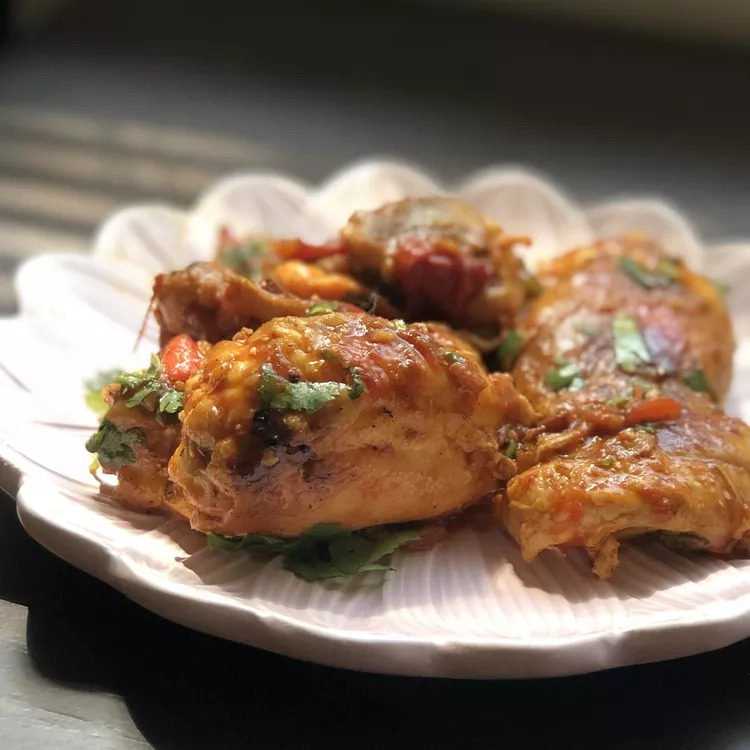

Chicken Karahi Recipe

Chicken Karahi
This dish gets its name from a karahi, a flat open pot used a lot in
Pakistani and Indian cooking. In spite of its name, this recipe can be
made in any pot.
Ingredients
- ½ cup sunflower oil
- 1 (3 pound) whole chicken, giblets discarded, cut into 12 pieces
- ¼ cup water
- 2 teaspoons ground cumin
- 1 ½ teaspoons salt
- 1 ½ teaspoons ginger and garlic paste
- ½ teaspoon red chile powder
- ¼ teaspoon ground turmeric
- 6 ripe tomatoes, roughly chopped
- 4 green chile peppers, finely chopped, or more to taste
- 1 bunch fresh cilantro leaves, finely chopped
Steps
-
Heat oil in a large pot or karahi over high heat. Add chicken pieces and
cook until starting to brown, about 5 minutes. Add water, cumin, salt,
ginger and garlic paste, red chile powder, and turmeric; cook and stir
until fragrant, about 30 seconds.
-
Stir tomatoes and green chile peppers into the pot. Reduce heat to low,
cover, and cook until chicken pieces are no longer pink at the bone,
about 30 minutes. An instant-read thermometer inserted near the bone
should read 165 degrees F (74 degrees C).
-
Sprinkle cilantro leaves over chicken and cook until leaves look
slightly wilted, about 30 seconds.